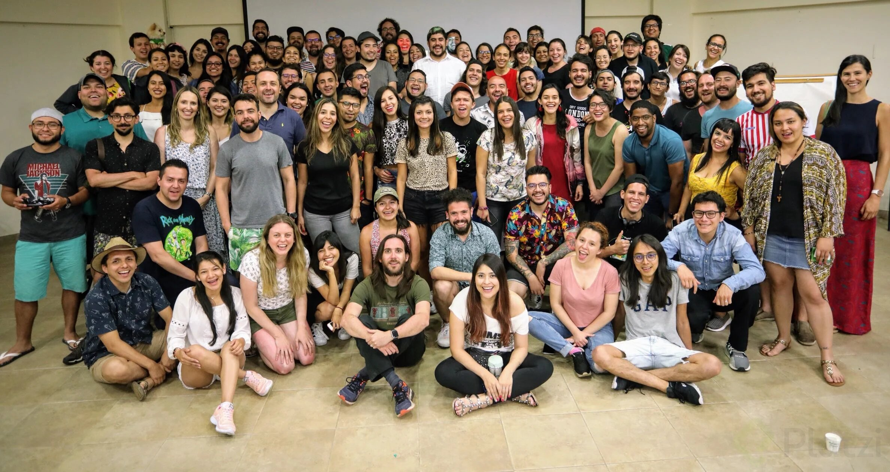

Hyperblog Tu blog de cabecera
Hyperblog Tu blog de cabecera
Este es el titulo del post
Este es el párrafo inicial donde se realizará la explicación sobre las ramas

Los blogs son la mejor forma de compartir información y tus ideas. Mucho mas que ir a conferencias o salir en Youtube. Excepto si eres un rocktar.
Suscribete y dale like